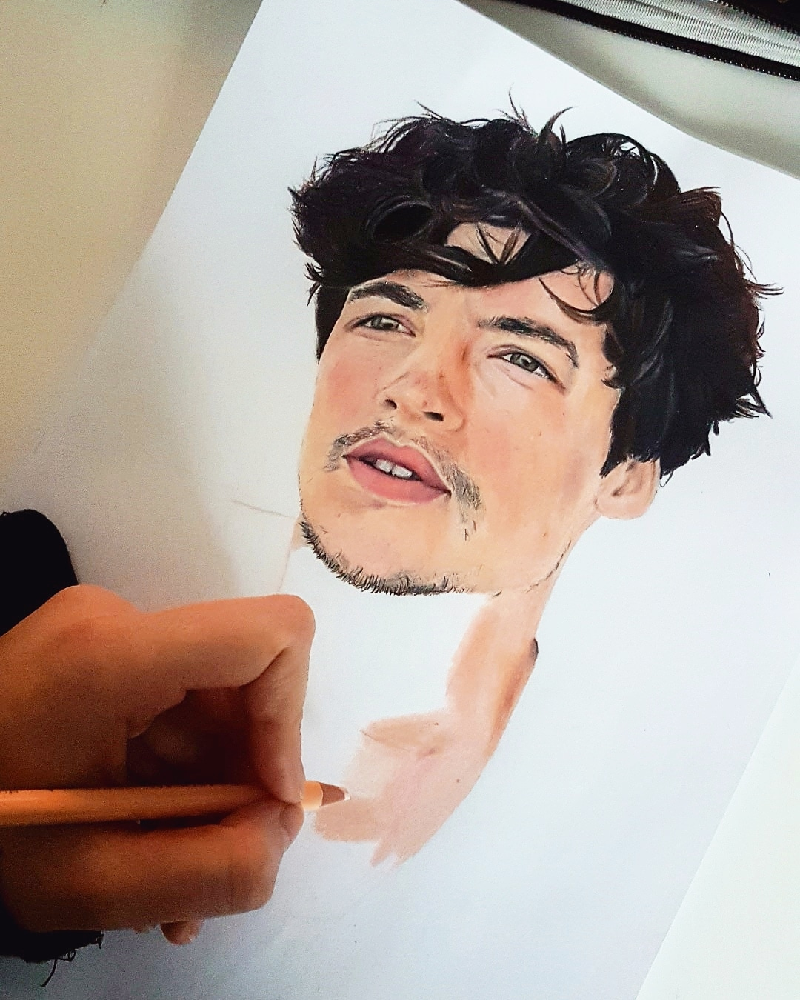
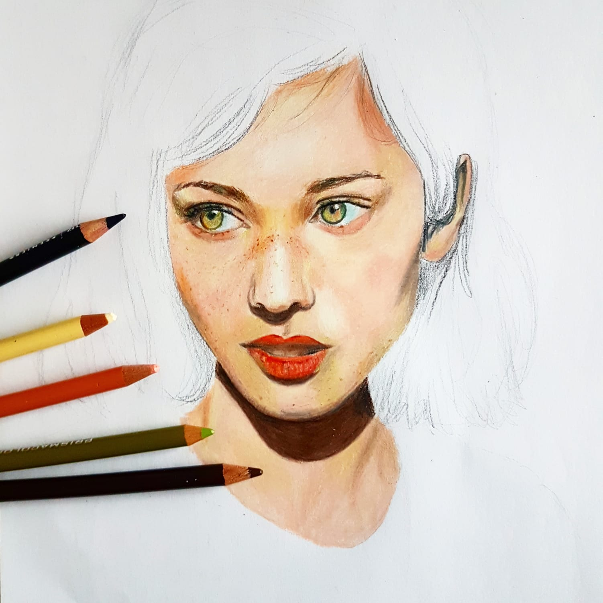
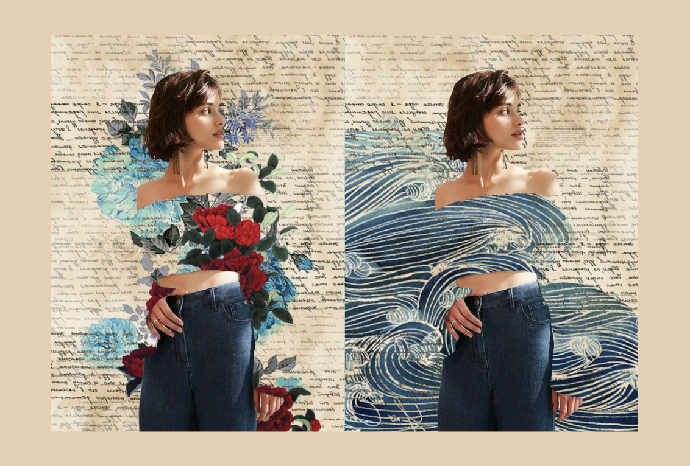

Art
Al van kinds af aan ben ik gek op tekenen en dit is nog steeds mijn hobby. Naast tekenen op papier ben ik ook digitaal gaan tekenen met mijn wacom tablet.


Illustraties & Extra's
Ik oefen ook graag met design in mijn vrije tijd. Dat doe ik op verschillende manieren: van shirts laten bedrukken met een eigen ontwerp tot mijn photoshop skills verbeteren met uitprobeersels.

